Module 11 — Historical Playback | Pages 643-666
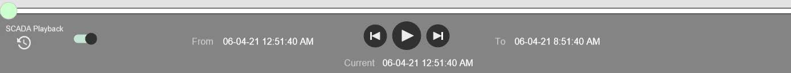
Lab 23 – Implementing Historical Playback in a ViewApp
Lab 23 – Implementing Historical Playback in
a ViewApp
Introduction
In this lab, you will implement the historical playback feature in your ViewApp.
You will start by configuring the historical data playback service in your Galaxy.
Then, you will import some prebuilt symbols, including a playback control panel (shown below), a
playback status indicator, and a playback dashboard symbol.
You will update the Main layout with a slide-in pane on the bottom and assign the playback control
panel symbol to it. You will also add a small pane at the top and assign the playback status
indicator symbol to it.
Then, in the ViewApp, you will add a navigation item to access the playback dashboard symbol
and test historical playback in a preview session.
Note that the playback control panel symbol is configured such that only users with access levels
greater than 9000 can start historical playback.
Objectives
Upon completion of this lab, you will be able to:
Configure the historical data replay service in the Galaxy
Use prebuilt symbols for historical playback functions in a running ViewApp
View historical data in playback mode in a running ViewApp
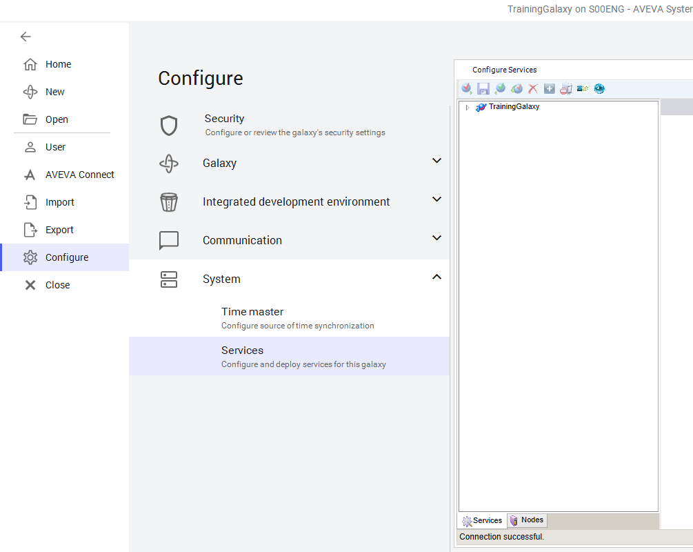
Create and Deploy an Instance of the Playback Service
First, you will create an instance of the historical playback service and rename the service instance
with the name of the Historian node. Then you will deploy the instance.
1.
On the Galaxy menu, select Configure | System | Services.
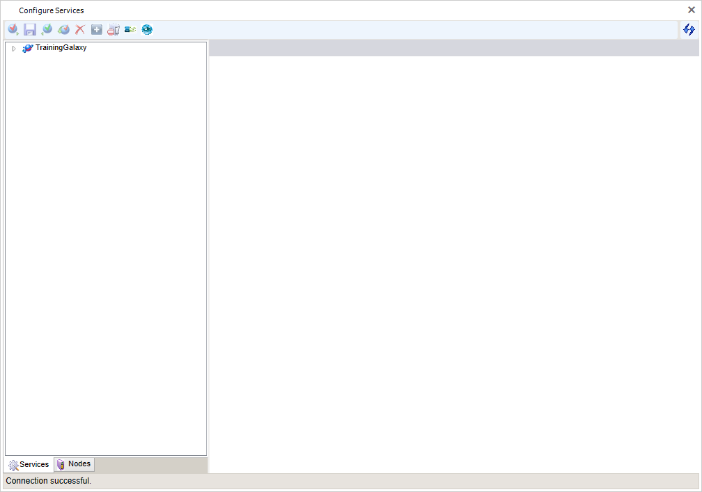
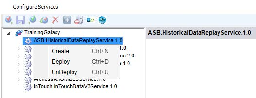
Lab 23 – Implementing Historical Playback in a ViewApp
The Configure Services dialog box appears.
2.
In the left pane, expand TrainingGalaxy.
3.
Right-click ASB.HistoricalDataReplayService.1.0 and select Create.
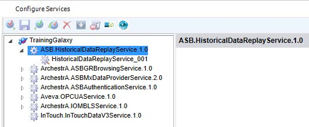
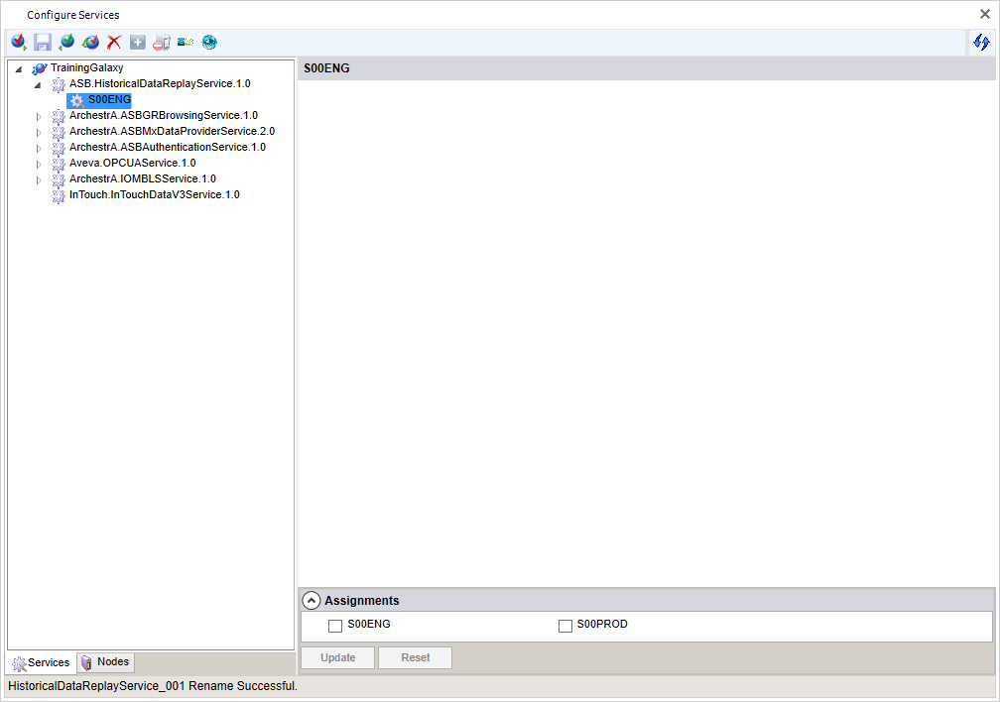
An instance of the service named HistoricalDataReplayService_001 is created.
You may need to expand ASB.HistoricalDataReplayService.1.0 to see the new instance in
the list.
4.
Rename the service instance to the name of the Historian node in your Galaxy.
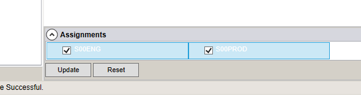
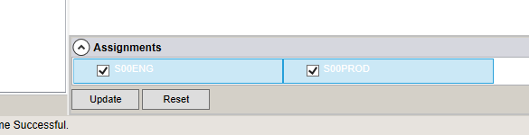
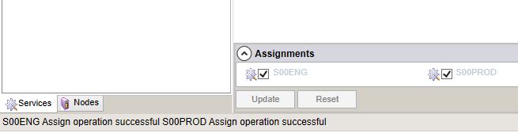
Lab 23 – Implementing Historical Playback in a ViewApp
5.
In the left pane, ensure that the service instance is selected.
6.
In the bottom-right pane under Assignments, check the node(s) for the assignment.
You can assign the service to one or more nodes in the Galaxy. As long as there is a node in
the Galaxy running the deployed service, the playback feature can be used for any running
ViewApp in the Galaxy. In some scenarios, nodes to which the service is assigned might be
turned off, so it is better to deploy the playback service on the nodes on which the ViewApp
will be running and using the playback feature.
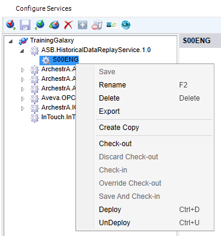
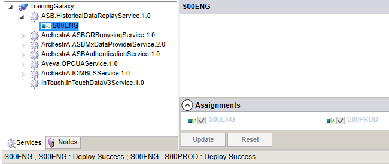
8.
In the left pane, right-click the service instance and select Deploy.
When the deployment is complete, the icon for the instance changes to indicate that it is
deployed and a Deploy Success message appears in the status bar.
9.
Close the Configure Services dialog box.
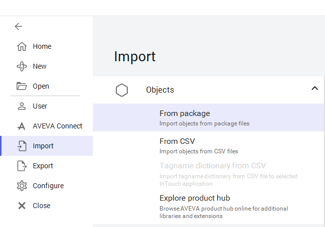
Lab 23 – Implementing Historical Playback in a ViewApp
Import Playback Content
In the following steps, you will continue in the backstage to import three prebuilt symbols.
10. Ensure you are still in the backstage and select Import | Objects | From package.
The Import Objects from package dialog box appears.
11. Navigate to C:\Training, select Lab 23 - Content for Playback_Prebuilt.aaPKG, and then
click Open.
The Import Preferences dialog box appears.
12. Leave the default settings and click Import.
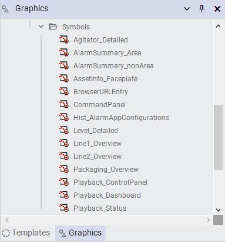
13. When the status of the import process is complete, click Close, and then return to the main
page of the System Platform IDE.
On the Graphics tab, notice that three new symbols are imported into the Training \ Symbols
toolset: Playback_ControlPanel, Playback_Dashboard, and Playback_Status.
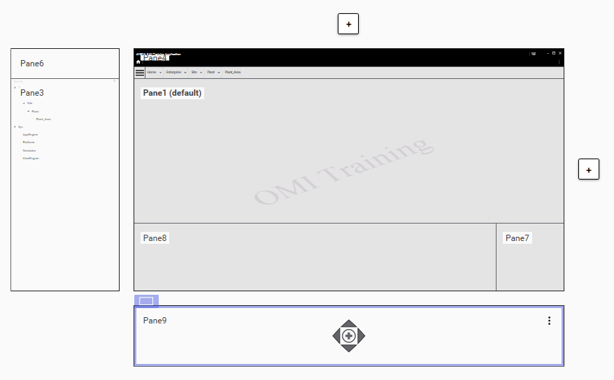
Lab 23 – Implementing Historical Playback in a ViewApp
Update the Main Layout
In the following steps, you will update the Main layout.
14. On the Graphics tab, in the Training \ Layouts toolset, double-click Main to open it in the
Layout Editor.
15. At the bottom of the layout, click the Add Slide-In Pane button.
A slide-in pane is added at the bottom.
The name of the new pane is Pane9.
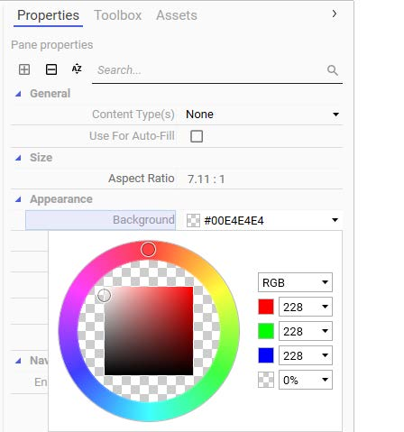
16. On the Properties tab, click the down-arrow to the right of the Appearance \ Background
property to display the color picker.
17. In the list of RGBA color code value fields, change the last field to a value of 0.
You may need to click off the color picker to close it.
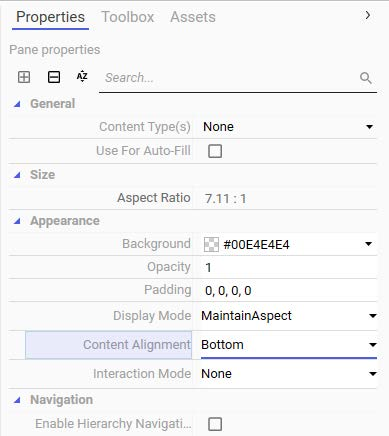
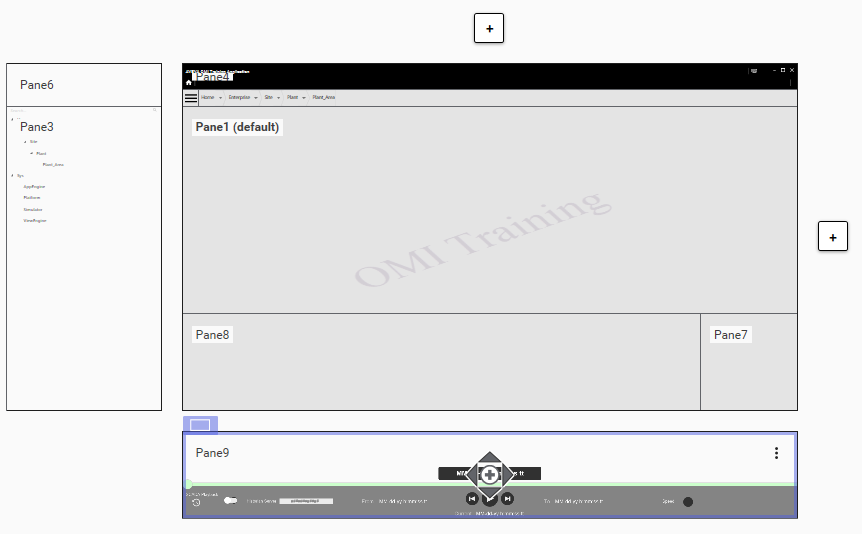
Lab 23 – Implementing Historical Playback in a ViewApp
18. For the Appearance \ Content Alignment property, change the value to Bottom.
19. On the Toolbox tab, enter a search string to find the Playback_ControlPanel symbol, and
drag it to Pane9.
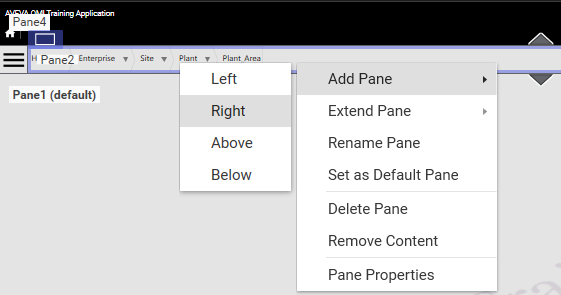
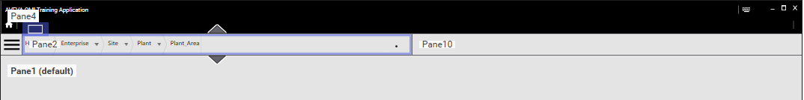
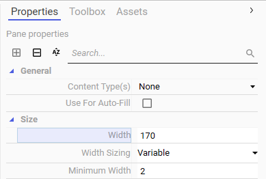
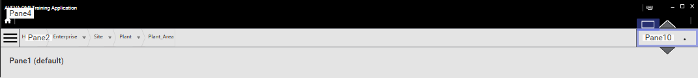
20. Select Pane2, and then right-click and select Add Pane | Right.
A new pane named Pane10 is added to the right of Pane2.
21. Select Pane10.
22. On the Properties tab, change the Size \ Width property to 170.
The width of Pane10 is reduced in the preview.
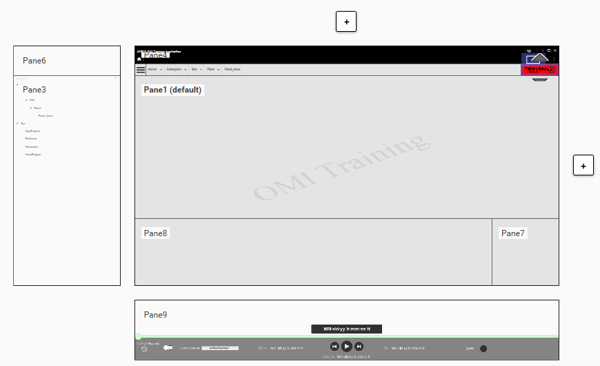
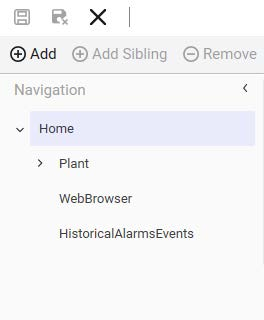
Lab 23 – Implementing Historical Playback in a ViewApp
23. On the Toolbox tab, enter a search string to find the Playback_Status symbol, and drag it to
Pane10.
24. Save and close the Main layout, and check it in.
Add a Navigation Item
In the following steps, you will add a navigation item to the ViewApp and configure it to access the
Playback_Dashboard symbol.
25. Switch to the ViewApp Editor.
26. Ensure Home is selected in the Navigation list.
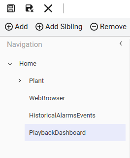
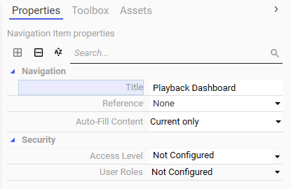
27. Click Add to add a new navigation item, and name it PlaybackDashboard.
28. On the Properties tab, update its Navigation \ Title property to Playback Dashboard.
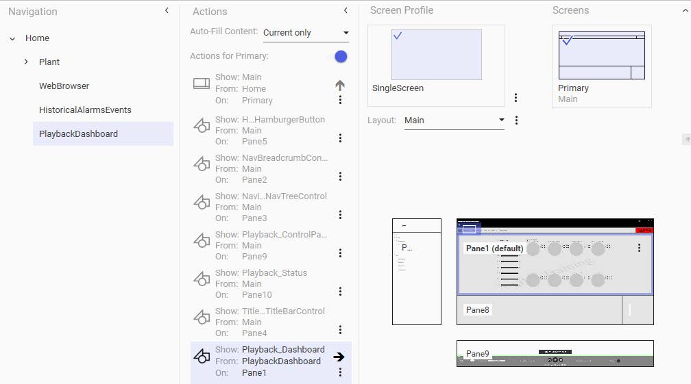
Lab 23 – Implementing Historical Playback in a ViewApp
29. On the Toolbox tab, enter a search string to find the Playback_Dashboard symbol, and drag
it to Pane1.
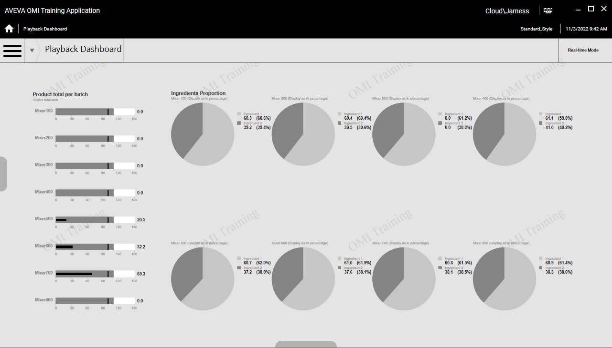
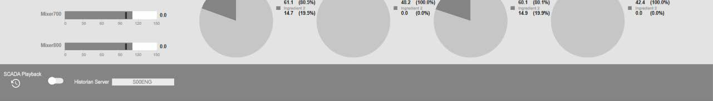
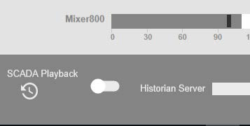
Test the ViewApp in a Preview Session
Now you will update the preview session to test the new navigation item and historical playback
feature.
30. Click Update to update the preview session.
The preview session opens navigated to Playback Dashboard. The graphic displays all of the
live data from totalizers for each mixer.
Notice that
Administrators role, which is configured with an access level of 9999.
Also notice the Display Slide-In Pane button at the bottom of the display.
31. At the bottom of the display, click the Display Slide-In Pane button to show the
Playback_ControlPanel symbol.
Notice the Historical Playback Enable switch on the Playback_ControlPanel symbol. It
shows that historical playback mode is not enabled.
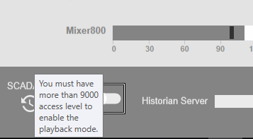
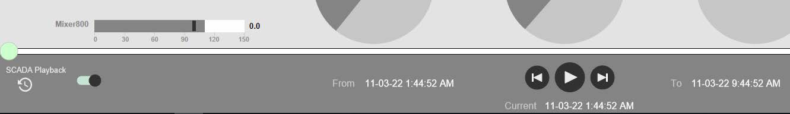
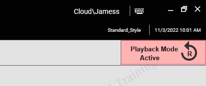
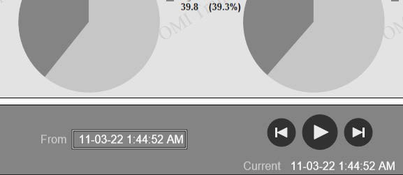
Lab 23 – Implementing Historical Playback in a ViewApp
32. Hover your mouse over the Historical Playback Enable switch.
Notice that a floating tooltip displays the security access level requirement for enabling
playback mode. By default, the requirement is an access level higher than 9000.
33. Click the Historical Playback Enable switch to enable historical playback mode in the
ViewApp.
Notice that additional controls appear on the Playback_ControlPanel symbol.
Also notice the Playback_Status symbol in the top-right of the ViewApp. It blinks to indicate
Playback Mode Active in the ViewApp.
34. In the Playback_ControlPanel symbol, click the From time to input an initial time to start the
playback.
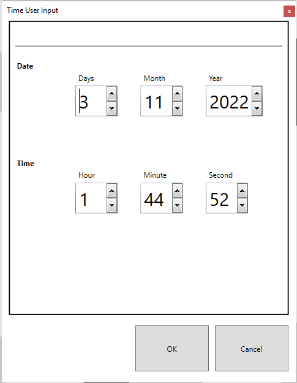
The Time User Input dialog box appears.
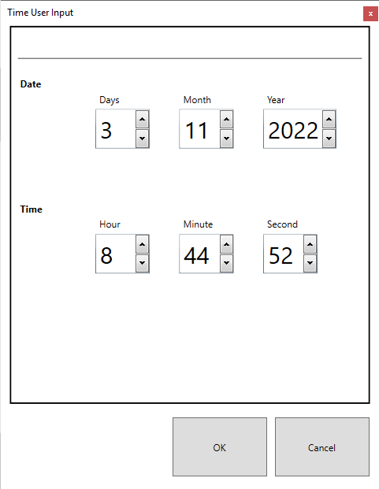
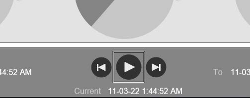
Lab 23 – Implementing Historical Playback in a ViewApp
35. In the Time area, increase the Hour field by seven hours.
36. Click OK.
37. In the Playback_ControlPanel symbol, click the Play button to start historical playback.
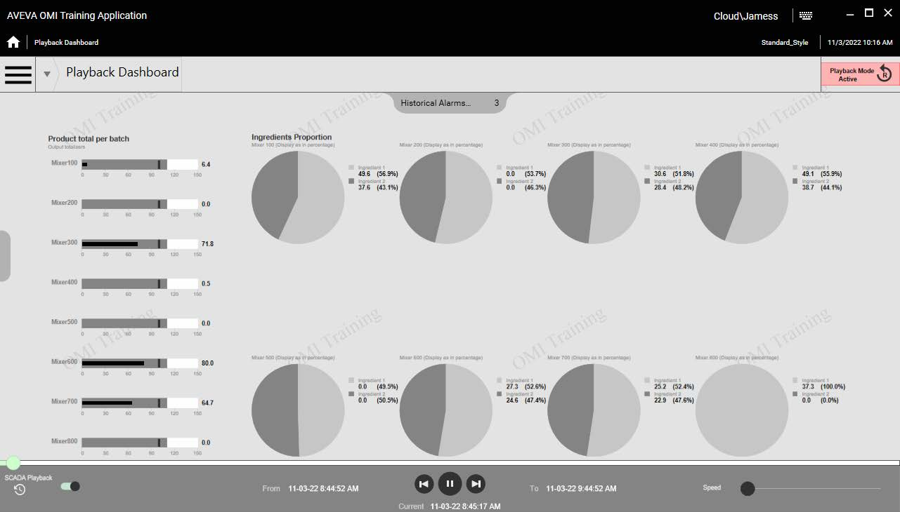
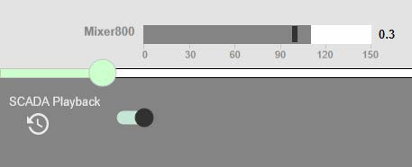
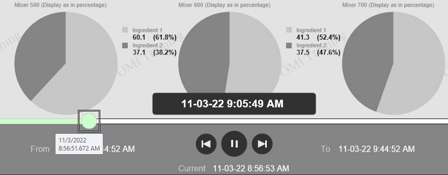
Notice the Playback_Dashboard symbol starts displaying historical data.
At the top of the Playback_ControlPanel symbol, notice the circle in the history time progress
bar is moving to the right.
38. Click the circle in the history time progress bar and drag it to the right.
Notice that floating tooltips show the date and time of the historical data based on the position
of the progress bar.
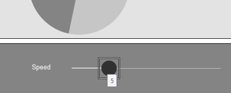
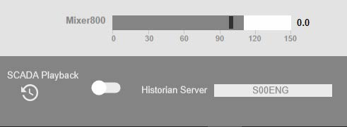
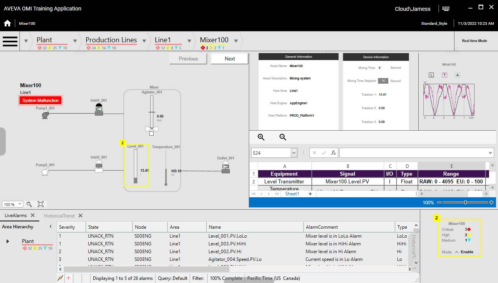
Lab 23 – Implementing Historical Playback in a ViewApp
39. On the right side of the Playback_ControlPanel symbol, slide the Speed slider to the right
and to the left, to see the playback speed up and slow down.
In the next steps, you will disable historical playback mode, navigate to a different view, and then
enable playback mode again.
40. In the Playback_ControlPanel symbol, click the Historical Playback Enable switch to disable
playback.
41. Click off the bottom slide-in pane to close it, and then navigate the ViewApp to Mixer100.
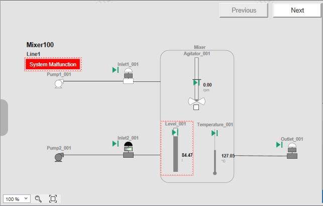
42. At the bottom of the display, click the Display Slide-In Pane button to show the
Playback_ControlPanel symbol again.
43. Click the Historical Playback Enable switch to enable playback.
Notice that a Live Value Playback icon appears over graphics that contain non-historized
values during historical playback. This is a feature built in to Situational Awareness Library
symbols. This icon informs the viewer that not all references used in the graphics can be
resolved from historical sources.
For example, the engineering units for level and temperature are pulled from live sources
because these values are not actually historized.
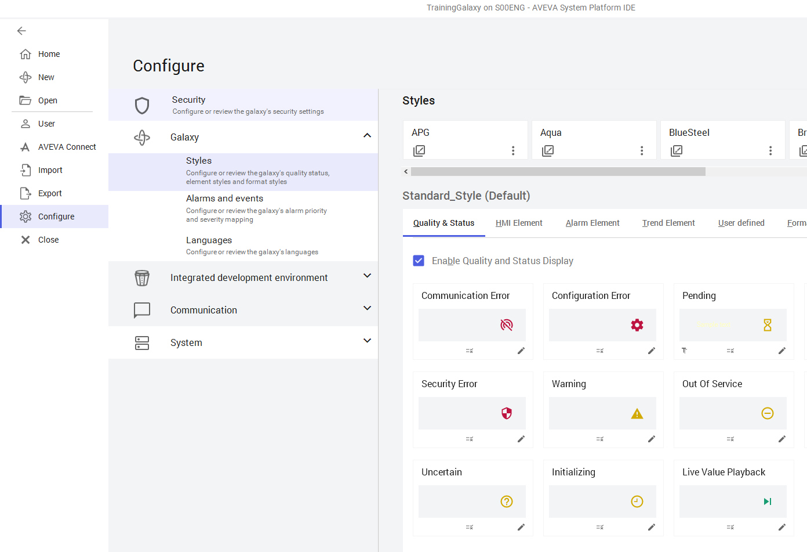
Lab 23 – Implementing Historical Playback in a ViewApp
In the following steps, you will identify the source of the Live Value Playback icon.
44. In the System Platform IDE, on the Galaxy menu, select Configure | Galaxy | Styles.
The Styles area appears.
45. On the Quality & Status tab, notice the Live Value Playback style.
This style is used automatically when the value being displayed is not historized.
46. Return to the main page of the System Platform IDE.
47. Switch to the ViewApp preview.
In the next steps you will turn off playback mode, switch to a different user, and then attempt to
enable playback again.
48. In the Playback_ControlPanel symbol, click the Historical Playback Enable switch to disable
playback.
49. On the title bar, click the logged-in user name, and then select Switch User.
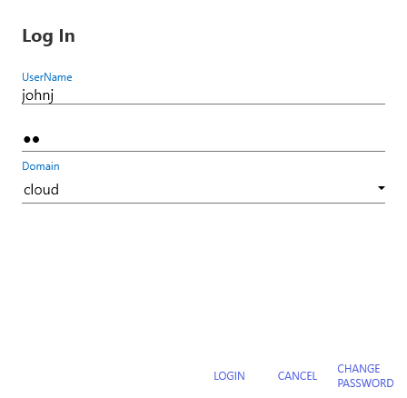
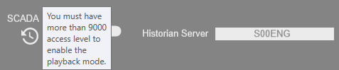
50. In the Login dialog box enter
Review the lab steps above and list the main configuration actions you completed.
Consider the dependencies between steps and how skipping one might affect the outcome.